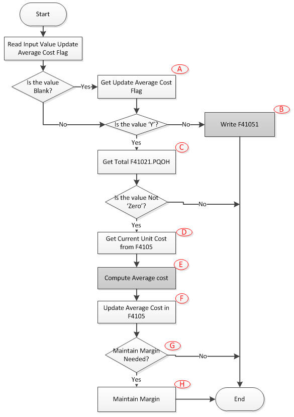

This note is to explain possible difficulty in getting average cost. Currently Average Cost is to be updated through X4181 -
Prior to this technical document, please refer to <Document 625564.1> - E1: 41: Weighted Average Cost (P4105/R41811/P4205/P4312/P4114/P4112)
which explains,
Weighted Average:
Average cost is equal to total cost divided by the total quantity (the output quantity, Q). It is important to aware that average costs may be dependent on the time period considered (increasing production/receipt may be expensive or impossible in the short term, for example).
Simplified formula is,
AC (= Average Cost) = { TC (= Total Cost) / Q (= Quantity) }
Or,
[(QtyOnHand x CurrWghtAvgCost) + (TransQty x TransUnitCost)] / (QtyOnHand + TransQty)
There are two commonly used average cost methods:
: In reality, computation of unit cost for costing method '02 - Weighted Average Cost' behavior more like moving-average cost for on-line update (and weighted average cost method for batch) because whenever there is any transaction which affects on hand quantity (and defined in UDC 40/AV) a new average cost is to be computed. Even when there is no quantity change (or change is total cost) the average unit cost can be computed. In EnterpriseOne, outbound (transaction which relieves on hand quantity) transaction can be added for this computation.
In EnterpriseOne the business function X4181 shall perform this computation and below table show detail routine on this.
Available applications based on UDC 40/AV - Average Cost Calculation
| Apps ID | Application Description | Calling X4181 via | Reference |
|---|---|---|---|
| 40G30 | Weigh Tag Receipt | ||
| P31113 | WO Inventory Issue - Temp | ||
| P31114 | Completions | ||
| P31123 | superbackflush | ||
| P4074 | Check Price and Availability | P4074 > B40G1100 > X4181 | @Not in UDC 40/AV (check again) |
| P41014 | Speed Item Setup | ||
| P4112 | Inventory Issues | ||
| P4113 | Inventory Transfers | ||
| P4114 | Inventory Adjustments | ||
| P4116 | Item Reclassifications | ||
| P41801 | Future Cost/Price Update | ||
| P41810 | Recompute Average Cost | ||
| P4205 | Shipment Confirmation | ||
| P42800 | Sales Update | ||
| P4312 | Purchase Order Receipts | P4312 > XT4312Z1 > X4181 | Same routine applies to any PO Receipt routine through Master Business Function |
| P4314 | Purchase Order Match | P4314 > XT4314ZN > X4181 | Same routine applies to any Voucher Match Routine through Master Business Function |
| P43214 | Reverse Purchase Order Receipt | P4314 > N4301240 > N4002350 > X4181 | |
| P43250 | Receipt Routing Movement | ||
| P43253 | Receipt Routing Disposition | ||
| P43291 | Landed Cost Selection | P43291 > N4300970 > N4002350 > X4181 | |
| R30837 | WIP Revluation | R30837 > X4181 (Direct call) | @Not included in UDC 40/AV (check again) |
| R31804 | Variance Accounting | R31804 > X4181 (Direct call) | |
| R41811 | Average Cost Update | R41811 > X4181 (Direct call) | |
| R43092Z1I | Routing Interoperability | ||
| R45620 | Reprice Procurement/Receipts | R45620 > B40G1100 > X4181 | @Not in UDC 40/AV (check again) |
| R47121 | EDI Product Activity Data | ||
| R47500 | Batch Ship Confirm | ||
| R4981 | Freight Update | R4981 > N4901320 > X4181 | |
| R76B804 | Process Taxes in Receipt File | ||
| X4617 | WMS Confirmation Server |
Note: If column value "Calling X4181 via" is empty the routine has to be,
1. End Doc routine of Master Business Function related with applications which is calling F4111EndDocument
2. F4111EndDocument is calling X4181
Currently X4181 is made up of below two functions,
X4181 - AverageCostUpdate (F4105 Update Average Cost)
| Structure Member | Data Type | Req | I/O | Alias | Detail Description |
|---|---|---|---|---|---|
| mnShortItemNumber | MATH_NUMERIC | Y | I | ITM | |
| szSecondItemNumber[26] | JCHAR | Y | I | LITM | |
| szThirdItemNumber[26] | JCHAR | Y | I | AITM | |
| szBranchPlant[13] | JCHAR | Y | I | MCU | |
| szLocation[21] | JCHAR | LOCN | |||
| szLotNumber[31] | JCHAR | LOTN | |||
| mnTransactionQuantity | MATH_NUMERIC | TRQT |
when cUseUnitCost is 1 this value has to be zero else actual transaction quantity Assign mnTransactionQuantity based on Primary UOM |
||
| mnExtendedCost | MATH_NUMERIC | Y | I | PAID | Depends on value in cUseUnitCost this value can be extended amount or variance amount If (cUnitCost = '1') then Variance (amount difference) Else ExtendedAmount |
| cCostingLevel | JCHAR | Y | I | CLEB | F4101.CLEV |
| cUpdateAverageCost | JCHAR | Y | I | AVGC |
If input value is blank then read it Based on System Constant File (F4009). If this flag is 'N' then write the Average Cost Table (F41051) Y - To update |
| mnMarginMaintenance | MATH_NUMERIC | MMPC | |||
| cMarginMaintenanceFlag | JCHAR | Y | I | MGMN | Based on F4102 (Item Branch Plant) |
| cSalesBasePriceLevel | JCHAR | PLEV | |||
| szPrimaryUOM[3] | JCHAR | UOM1 | |||
| szProgramID[11] | JCHAR | PID | |||
| szCurrencyCode[4] | JCHAR | CRCD | |||
| mnUnitCostInPrimary | MATH_NUMERIC | UNCS | Assign Unit Cost in Primary UOM (refer mnTransactionQuantity) | ||
| cUseUnitCost | JCHAR | Y | I | EV01 | Valid values are, Blank 1 - cUseUnitCost Depends on this input value the way it computes Average Cost is different |

(B) Only when F4009.AVGC is 'N' then write F41051 (Average Cost Work file) which is to be used through R41811 (Average Cost Update) based on input parameters
(C) Get Total of F41021.PQOH (On Hand Quantity): Through WHILE loop reads all the data from F41021 (Location Master File) where it meets ITM, MCU, LOCN and LOTN
(D) Get current cost from F4105 (Item Cost File) based on ITM, MCU, LOCN, LOTN and CLEV (cCostingLevel) by calling BSFN XF4105 - GetItemCost.
***Retrieve the CURRENT average cost based on the costing level
Call GetItemCost(XF4105) with LEDG = '02'
If record found
Move '02' to COLEDG
Load NEW into COUNCS
Call UpdateItemCost(XF4105) to update record
else
***Determine if the Average Cost should be the costing method
CallGetDefaultInventoryPurchasingCost Method(XF4105)
Move '02' to COLEDG
Load NEW into COUNCS
Call UpdateItemCost(XF4105) to write record
(E) Compute Average Cost: Now SUM (F41021.PQOH) and F4105.UNCS are determined via above routines so based on this value compute Average Cost (mnAVGC)
(F) Update Average Cost: Based on AverageCost Update through BSFN XF4105 - UpdateItemCost (F4105 Update Item Cost) where szCostMethod = "02"
(G) To Update Margin Information:
IF Margin Maintenance (MGMN) is equal 'Y'
If (Margin Percent) MMPC is null
Fetch the Item Branch (F4102) with ITM and MCU to retrieve it
If PLEV and/or UOM1 are null
Fetch the Item Master (F4101) to retrieve them
If MMPC not equal zeros
Call MarginMaintPriceUpdate (X4078)
Arithmetic computation
Supposing that:-
So before compute average cost through R41811 (Average Cost Update)
Detail Computation:
| lpmnAVGC | mnResult | mnTransactionQuantity | mnExtendedCost | lpmnPQOH | lpmnUNCS | |
|---|---|---|---|---|---|---|
| As-Is | 150 | 275.00 | 250 | 1.0000 | ||
| 1st | 100 (A) | |||||
| 2nd | 100.00 (B) | |||||
| 3rd | 375.00 (C) | |||||
| 4th | 1.5000 (D) |
Explanation on computation
So simplified fomular in R41811 is,
AverageCost = {(Beginning Total Cost) + SUM (F41051.ECST)}/SUM(F41021.PQOH)
because F41021.PQOH accumulates each and individual transaction. Technically this is possible because F41021 gets update (and outside transaction processing boundaries) before X4181 (AverageCostUpdate) gets handled.
Code detail in X4181:-
X4181 - DeleteAverageCostRecord (F41051 Delete Average Cost Record)
| Structure Member | Data Type | Req | I/O | Alias | Used For |
|---|---|---|---|---|---|
| mnUniqueID | MATH_NUMERIC | O | I | UKID |